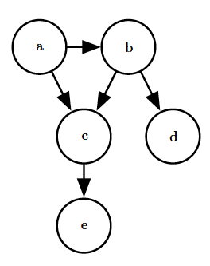
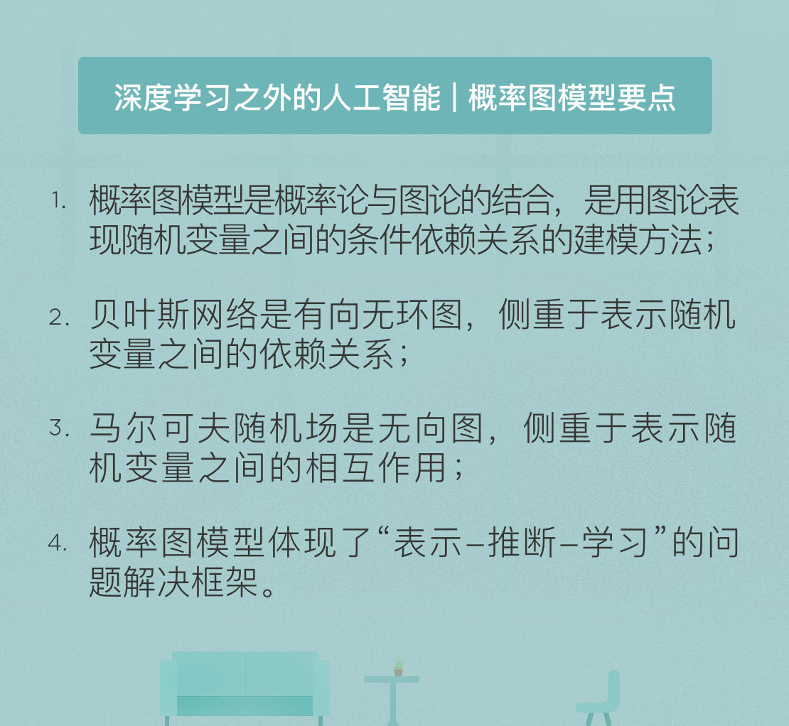

- 00 开篇词 人工智能：新时代的必修课.md.html
- 01 数学基础 九层之台，起于累土：线性代数.md.html
- 02 数学基础 月有阴晴圆缺，此事古难全：概率论.md.html
- 03 数学基础 窥一斑而知全豹：数理统计.md.html
- 04 数学基础 不畏浮云遮望眼：最优化方法.md.html
- 05 数学基础 万物皆数，信息亦然：信息论.md.html
- 06 数学基础 明日黄花迹难寻：形式逻辑.md.html
- 07 机器学习 数山有路，学海无涯：机器学习概论.md.html
- 08 机器学习 简约而不简单：线性回归.md.html
- 09 机器学习 大道至简：朴素贝叶斯方法.md.html
- 10 机器学习 衍化至繁：逻辑回归.md.html
- 11 机器学习 步步为营，有章可循：决策树.md.html
- 12 机器学习 穷则变，变则通：支持向量机.md.html
- 13 机器学习 三个臭皮匠，赛过诸葛亮：集成学习.md.html
- 14 机器学习 物以类聚，人以群分：聚类分析.md.html
- 15 机器学习 好钢用在刀刃上：降维学习.md.html
- 16 人工神经网络 道法自然，久藏玄冥：神经网络的生理学背景.md.html
- 17 人工神经网络 一个青年才俊的意外死亡：神经元与感知器.md.html
- 18 人工神经网络 左手信号，右手误差：多层感知器.md.html
- 19 人工神经网络 各人自扫门前雪：径向基函数神经网络.md.html
- 20 人工神经网络 看不见的手：自组织特征映射.md.html
- 21 人工神经网络 水无至清，人莫至察：模糊神经网络.md.html
- 22 深度学习 空山鸣响，静水流深：深度学习概述.md.html
- 23 深度学习 前方有路，未来可期：深度前馈网络.md.html
- 24 深度学习 小树不修不直溜：深度学习中的正则化.md.html
- 25 深度学习 玉不琢不成器：深度学习中的优化.md.html
- 26 深度学习 空竹里的秘密：自编码器.md.html
- 27 深度学习 困知勉行者勇：深度强化学习.md.html
- 28 深度学习框架下的神经网络 枯木逢春：深度信念网络.md.html
- 29 深度学习框架下的神经网络 见微知著：卷积神经网络.md.html
- 30 深度学习框架下的神经网络 昨日重现：循环神经网络.md.html
- 31 深度学习框架下的神经网络 左右互搏：生成式对抗网络.md.html
- 32 深度学习框架下的神经网络 三重门：长短期记忆网络.md.html
- 33 深度学习之外的人工智能 一图胜千言：概率图模型.md.html
- 34 深度学习之外的人工智能 乌合之众的逆袭：集群智能.md.html
- 35 深度学习之外的人工智能 授人以鱼不如授人以渔：迁移学习.md.html
- 36 深度学习之外的人工智能 滴水藏海：知识图谱.md.html
- 37 应用场景 你是我的眼：计算机视觉.md.html
- 38 应用场景 嘿, Siri：语音处理.md.html
- 39 应用场景 心有灵犀一点通：对话系统.md.html
- 40 应用场景 数字巴别塔：机器翻译.md.html
- 一键到达 人工神经网络复习课.md.html
- 一键到达 应用场景复习课.md.html
- 一键到达 数学基础复习课.md.html
- 一键到达 机器学习复习课.md.html
- 一键到达 深度学习之外的人工智能复习课.md.html
- 一键到达 深度学习复习课.md.html
- 一键到达 深度学习框架下的神经网络复习课.md.html
- 推荐阅读 我与人工智能的故事.md.html
- 新书 《裂变：秒懂人工智能的基础课》.md.html
- 直播回顾 机器学习必备的数学基础.md.html
- 第2季回归 这次我们来聊聊机器学习.md.html
- 结课 溯洄从之，道阻且长.md.html
- 课外谈 “人工智能基础课”之二三闲话.md.html
- （课外辅导）人工神经网络 拓展阅读参考书.md.html
- （课外辅导）数学基础 拓展阅读参考书.md.html
- （课外辅导）机器学习 拓展阅读参考书.md.html
- （课外辅导）深度学习 拓展阅读参考书.md.html
- 捐赠
33 深度学习之外的人工智能 一图胜千言：概率图模型
在前面两个模块中，我和你分享了神经网络和深度学习的知识。神经网络是理解深度表征的模型，深度学习是训练深度神经网络的算法，两者是一脉相承的关系。本质上讲，神经网络和深度学习都是由数据驱动的，大量有标记的训练样本是复杂模型取得良好性能的前提，这也解释了为什么直到近年来深度学习才得以蓬勃发展。
但深度学习远非实现人工智能的唯一途径，在接下来的四篇文章中，就让我和你聊一聊深度学习之外的人工智能。
早年间的人工智能赖以实现的基础是逻辑学，但逻辑学适用的是理想化的，不存在任何不确定性的世界。可遗憾的是，真实世界是由随机性和误差主宰的，在这光怪陆离的环境中，纯粹的数理逻辑就如同古板的老夫子一般与周遭格格不入。
可即使抛开噪声与干扰不论，很多问题也没有固定的解。在医学上，即使子女的基因和母亲的基因已经确定，父亲的基因也可以有多种可能。要解决这类不确定性推理的问题，就必须借助概率论的方法。而将概率方法与图论结合起来，得到的就是今天的主题：概率图模型。
概率图模型（probabilistic graphical model）也叫结构化概率模型，是用图论表现随机变量之间的条件依赖关系的建模方法。典型的概率图模型包括贝叶斯网络和马尔可夫随机场，分别对应着有向图模型和无向图模型。
贝叶斯网络（Bayesian network）的拓扑结构是有向无环图，“有向”指的是连接不同顶点的边是有方向的，起点和终点不能调换；“无环”指的是从任意顶点出发都无法经过若干条边回到该点，在图中找不到任何环路。
贝叶斯网络中的顶点表示随机变量，一个顶点既可以表示可观察的显式变量，也可以表示未知参数和隐变量。如果不同的变量之间存在因果关系，那么相应的顶点就会由带箭头的边连接起来，箭头的方向由表示原因的变量指向表示结果的变量，边的权重就是对应的条件概率值。
 图片引自《深度学习》图3.7
贝叶斯网络的作用是表示出随机变量之间的条件依赖关系，将多个随机变量的联合概率分布分解为条件概率因子乘积的形式。
根据条件概率的链式法则，四个随机变量\(A, B, C, D\)的联合概率可以写成
\[ p(A, B, C, D, E) = p(A) \\cdot p(B | A) \]
\[\\cdot p(C | B, A) \\cdot p(D | C, B, A) \\cdot p(E | D, C, B, A) \]
那么根据上面的概率图，联合概率就可以简化为
\[ p(A, B, C, D, E) = p(A) \\cdot p(B | A)\]
\[\\cdot p(C | B, A) \\cdot p(D | B) \\cdot p(E | C) \]
不知道这个例子是否让你想起另一种机器学习的方法：朴素贝叶斯分类。朴素贝叶斯分类的基础假设是不同的属性之间条件独立，因此类条件概率可以表示成属性条件概率的乘积。但在绝大多数情形下，这个假设是不成立的。将属性之间的依赖关系纳入后，得到的就是通用的贝叶斯网络。
贝叶斯网络引出的一个重要概念是条件独立性（conditionally independence）。如果事件\(a\)和\(b\)在另一事件\(c\)发生时条件独立，就意味着在\(c\)发生时，\(a\)发生与否与\(b\)发生与否相互无关，两者联合的条件概率等于单独条件概率的乘积，其数学表达式为
\[p(a, b | c) = p(a | c) \\cdot p(b | c)\]
条件独立性可以这样理解，假设天降大雪，那么一对夫妻各自从工作单位回家的话，他们到家的时间都会因下雪而延长，但两个人各自耽误的时间在下雪的条件下是独立的；可如果老公要去接老婆一起回家的话，条件独立性就不再满足了。
条件独立性是概率论视角下的概念，如果从图论的角度看，变量之间的依赖与独立对应的是顶点之间的连通与分隔。直观理解，两个直接相连的变量肯定不会条件独立。在不直接相连的两个变量之间，信息必须通过其他变量传递，如果信息传递的通道全部被堵塞，那么两个变量之间就能够满足条件独立性。假设两个变量\(X\)和\(Y\)之间通过第三个变量\(Z\)连接，那么连接的方式可以分为以下三种（注意箭头方向的区别）：
- 顺连：\(X \\rightarrow Z \\rightarrow Y\)或\(X \\leftarrow Z \\leftarrow Y\)
- 分连：\(X \\leftarrow Z \\rightarrow Y\)
- 汇连：\(X \\rightarrow Z \\leftarrow Y\)
在顺连的情况下，当变量\(Z\)已知时，\(X\)和\(Y\)条件独立。这是因为确定的中间变量不能通过变化传递信息，\(Z\)的固定取值不会随\(X\)的变化而变化，所以\(X\)的变化自然也不会通过\(Z\)影响到\(Y\)。这里的变量\(Z\)就像一扇固定的水闸，隔开了\(X\)和\(Y\)之间的流动，也就堵塞了两者之间的信息通道。
分连的情况与顺连类似，\(Z\)扮演的同样是固定水闸的角色。分连代表了一因多果的情况，当这个原因确定后，所有的结果之间都不会相互产生影响，因而\(Z\)已知时，\(X\)和\(Y\)条件独立。
反过来，在多因一果的汇连情形中，当\(Z\)未知时，来自\(X\)和\(Y\)的信息都会从这个窟窿里漏掉，此时\(X\)和\(Y\)条件独立。反过来，\(Z\)已知意味着将这个窟窿堵上，\(X\)和\(Y\)之间就构造出信息流动的通路，也就不满足条件独立的条件。需要注意的是，这里的\(X, Y, Z\)既可以是单个的顶点，也可以是顶点的集合。
条件独立性又可以引出贝叶斯网络另一个良好的性质，通俗的说就是贝叶斯网络的每个顶点只取决于有箭头指向它的其他顶点，而与没有箭头指向它的其他顶点条件独立。这个性质简化了贝叶斯网络中联合概率分布的计算，也可以节省大量的运算和存储。
当研究者要对真实世界建模时，最理想的方案是建立起包罗万象的联合分布，这就要求计算出分布中所有随机变量的所有可能取值的概率，并将它们存储起来。假定一个模型中包含8个二进制的随机变量，需要存储的概率值数目就会达到\(2 ^ {8} = 256\)个。
可如果在这8个变量中，每个变量最多只取决于其他两个变量，那么贝叶斯网络的概率表需要存储的只是相关顶点之间所有可能的状态组合，最多只要计算\(8 \\times 2 ^ 2 = 32\)个值，这不仅降低了运算复杂度，也节省了存储空间。尤其是在实际问题中，涉及的变量数目可能成千上万时，只要每个顶点都只有少量的父节点，贝叶斯网络在运算上的优势就体现得尤为明显。
贝叶斯网络的另一个优点是能够根据各变量之间的条件依赖性，利用局部分布来求得所有随机变量的联合分布。这个特点让贝叶斯网络在解决复杂问题时不需要关于某个实例的完整知识，而是从小范围的特定知识出发，逐步向复杂问题推广。
贝叶斯网络是基于不确定性的因果推断模型，其作用体现在在不完备的信息下，根据已观察的随机变量推断未观察的随机变量。在给定变量之间层次关系的前提下，如果按照自底向上的方式执行推断，就是由果溯因的诊断，这就像医生根据症状诊治病因（诊断过程其实就可以看成基于经验的贝叶斯推理过程）；如果按照自顶向下的方式执行推断，就是由因得果的推理，这使得贝叶斯网络可以用作数据的生成模型。
贝叶斯网络的构造包括两个步骤：首先要根据变量之间的依赖关系建立网络的拓扑结构，其次要根据拓扑结构计算每条边上的权重，也就是条件概率。网络结构的构建通常需要特定的领域知识，条件概率表的构造也就是贝叶斯网络的训练，在网络的规模较大时可以使用期望最大化等方法实现。
将贝叶斯网络的有向边替换为无向边，得到的就是马尔可夫随机场。马尔可夫随机场（Markov random field）属于无向图模型，它的每个顶点表示一个随机变量，每条边则表示随机变量之间的依赖关系。使用无向边使马尔可夫随机场不能表示出推理关系，但这也解除了对环路结构的限制。环路的存在使它可以表示循环依赖，而这又是贝叶斯网络无法做到的。和贝叶斯网络相比，马尔可夫随机场侧重于表示随机变量之间的相互作用。
贝叶斯网络中每一个节点都对应于一个先验概率分布或者条件概率分布，因此整体的联合分布可以直接分解为所有单个节点所对应的分布的乘积。而在马尔可夫随机场中，由于变量之间没有明确的因果关系，联合概率分布通常会表达为一系列势函数的乘积。这些乘积的求和并不一定等于1，因而必须进行归一化才能得到有效的概率分布。马尔可夫随机场中的联合概率分布可以写成
\[p(\\mathbf{x}) = \\dfrac{1}{Z} \\mathop \\Pi \\limits_k f_k(x_{{ k }})\]
式中的每个\(x_{{ k }}\)代表一个团，团是所有顶点的一个子集，并且团中所有的顶点都是全连接的；\(f_k(\\cdot)\)表示每个团对应的势函数，通常取对数线性模型；\(Z\)表示的则是用于归一化的配分函数。
在马尔可夫随机场中，随机变量的独立性和顶点的连通性之间也有对应关系，但其形式却比贝叶斯网络更加简单。要判断两个变量是否独立，只需要观察对应的顶点之间有没有将它们连接在一起的边就可以了。只有在两个顶点之间不存在任意一条信息通路时，对应的随机变量才是条件独立的。条件独立通常意味着两者之间所有的顶点都有固定的观察值。
无论是贝叶斯网络还是马尔可夫随机场，都属于结构化的概率模型。它们提供了将概率模型的结构可视化的简单方式，而对图形的观察可以加深对模型性质的认识，其中最主要的性质就是变量之间的条件独立性。此外，概率图模型还可以表示学习和推断过程中的复杂计算，隐式地承载了图形背后的数学表达，这在以下解决问题的三步框架得以体现。
- 表示：如何对不确定性和随机变量之间的关系进行建模
- 推断：如何从建立的模型中推演出要求解的概率
- 学习：对于给定的数据来说，何种模型是正确的
受篇幅所限，关于三步框架的内容就不做进一步的展开了。
今天我和你分享了概率图模型的原理，包括有向的贝叶斯网络和无向的马尔可夫随机场。其要点如下：
- 概率图模型是概率论与图论的结合，是用图论表现随机变量之间的条件依赖关系的建模方法；
- 贝叶斯网络是有向无环图，侧重于表示随机变量之间的依赖关系；
- 马尔可夫随机场是无向图，侧重于表示随机变量之间的相互作用；
- 概率图模型体现了“表示-推断-学习”的问题解决框架。
作为两种不同的模型，贝叶斯网络和马尔可夫随机场各有优势。那么它们能不能结合起来，各自避短扬长，共同发挥作用呢？
欢迎发表你的观点。

© 2019 - 2023 Liangliang Lee. Powered by gin and hexo-theme-book.